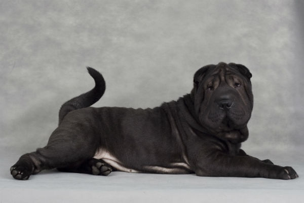
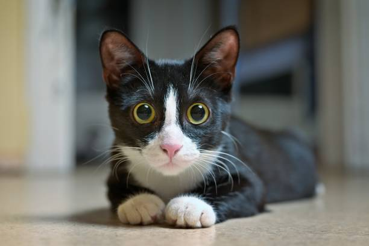
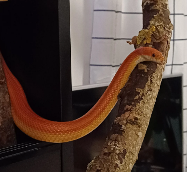
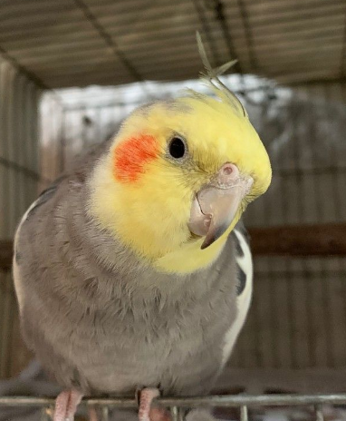

Animais para Adoção
Estes pets foram resgatados, cuidados e agora procuram um lar definitivo!

Amendoim
Status: Pronto para Adoção
Porte pequeno, macho, 1 ano. Muito brincalhão e se dá bem com crianças. Está na ONG Adota Cão.
💬 Quero Adotar

Lua
Status: Pronto para Adoção
Fêmea, 6 meses, castrada. É tímida no início, mas muito carinhosa. Está em um lar temporário. Contato: (11) 99999-9999.
💬 Quero Adotar

Ichimaru
Status: Pronto para Adoção
Cobra Milho macho, 2 anos. É docíl e preferem tutores silenciosos. Está na ONG Cobreteira.
💬 Quero Adotar

Cornelius
Status: Pronto para Adoção
Calopsita macho, 11 meses. inteligente e muito carinhoso. Está na ONG Passaros Felizes.
💬 Quero Adotar